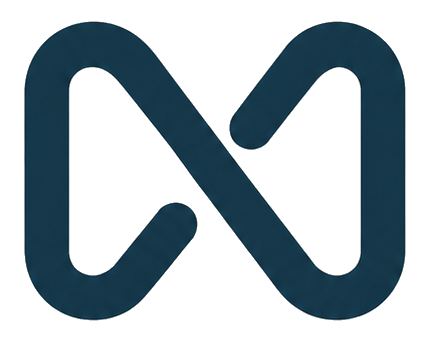

Experiência construída em implantação SaaS enterprise, eventos, clientes e operação real.
AI Transformation • SaaS • Onboarding
IA, onboarding e implantação com método para SaaS B2B.
Ajudo empresas SaaS a transformar processos, acelerar onboarding e estruturar implantações com tecnologia, automação e governança leve.


Transformação guiada para operações SaaS que precisam implantar melhor.ImplantaçãoOnboardingAutomaçãoAI Ops
Experiência aplicada em
Para quem chegou pelo blog
O conteúdo vem de prática em projetos, não de teoria solta.
A Munnius existe para transformar esse repertório em consultoria objetiva: diagnóstico, estruturação de processos, gestão de mudança e uso inteligente de IA no onboarding e na implantação SaaS.
Como a Munnius se conecta à minha trajetória na V360
Atuo profissionalmente na V360 e a Munnius é minha frente independente de consultoria e assessoria. As experiências citadas vêm da minha trajetória em projetos SaaS enterprise, sempre respeitando confidencialidade, contratos e sem representar vínculo comercial com clientes ou empregadores.
Por que isso importa para um lead?
Você não está contratando uma promessa abstrata de IA. Está conversando com alguém que já viveu implantação, teste, homologação, comunicação com cliente, recuperação de projeto e pressão de go-live.
Foco de atuação
AI Transformation aplicada ao onboarding e à implantação SaaS.
Um foco, três frentes integradas
Consultoria e assessoria para transformar onboarding e implantação em um sistema escalável.
A Munnius combina IA aplicada, desenho de processos, gestão de mudança e relacionamento com clientes para SaaS B2B que precisam implantar melhor sem perder proximidade.
AI Transformation com contexto
Casos de uso de IA priorizados a partir da operação, não da ferramenta da moda.
Onboarding e implantação SaaS
Jornadas, playbooks, ritos e indicadores para reduzir variação entre clientes.
Pessoas, relacionamento e change management
Adoção guiada, comunicação clara e alinhamento entre CS, produto, delivery e cliente.
Abordagem
Uma jornada clara para sair do diagnóstico e chegar na ativação.
Mapear
Entender gargalos, dados, ritos, ferramentas e experiência do cliente.
Priorizar
Escolher casos de uso com impacto prático, esforço controlado e dono claro.
Ativar
Criar playbooks, cadências e templates para implantação e onboarding.
Medir
Acompanhar adoção, tempo de implantação, retrabalho e bloqueios.
Evoluir
Automatizar com IA, treinar o time e transformar aprendizado em sistema.

Sobre
Consultoria com visão de produto, operação e execução aplicada.
Gabriel Munhoz é engenheiro de produção com MBA em Gestão de Projetos, liderando implantações enterprise SaaS, integrações ERP e frentes de onboarding em operações complexas.
Resultados
Menos improviso. Mais método, dados e automação.
+30%
redução média de retrabalho
6 sem
para implantar ritos e indicadores
100%
visibilidade executiva dos projetos
72h
para diagnóstico inicial
Prova social com contexto
O que líderes e colegas destacaram em projetos que participei.
"Gabriel faz muita diferença no projeto. Obrigada pela parceria."
"Você faz a diferença."
"Foi a diferença entre o projeto entrar nos eixos e ser entregue, trazendo segurança, gestão, controle de testes e configuração."
"Traz clareza para processos, boas práticas fiscais e gestão de mudança e homologação."
"Dedicação, inteligência, competência e vontade de aprender e ensinar."
"Alguém generoso, inteligente, amável e dotado de muitas qualidades."
Depoimentos e comentários associados a projetos da trajetória profissional de Gabriel Munhoz. A Munnius atua como consultoria independente.
Presença nas empresas
Projetos reais, equipes reais, relacionamento no centro.
ERPSAP, Oracle e Protheus
B2BImplantação enterprise
CSOnboarding e ativação


Blog
Insights práticos sobre SaaS, onboarding, implantação, IA e automação.
Da leitura para a ação
Se algum artigo descreveu sua operação, vale conversar.
O diagnóstico não começa vendendo solução. Ele começa organizando o problema: onde o onboarding trava, quem precisa mudar, quais dados faltam e onde IA pode ajudar sem virar distração.
Você traz o contexto
Produto, clientes, time, gargalos e momento da operação.
Eu organizo a leitura
Processo, relacionamento, riscos, adoção e oportunidades de IA.
A gente define o primeiro movimento
Um plano enxuto para sair da conversa com direção clara.
Diagnóstico
Pronto para transformar onboarding e implantação com IA?
Vamos identificar gargalos, relações críticas, oportunidades de automação e o primeiro movimento prático para sua operação SaaS.